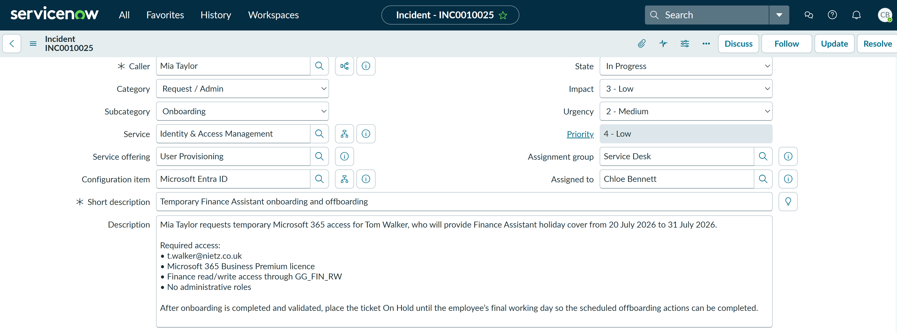
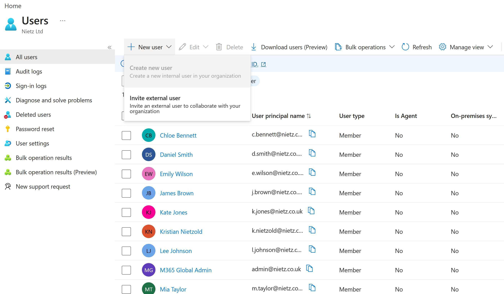
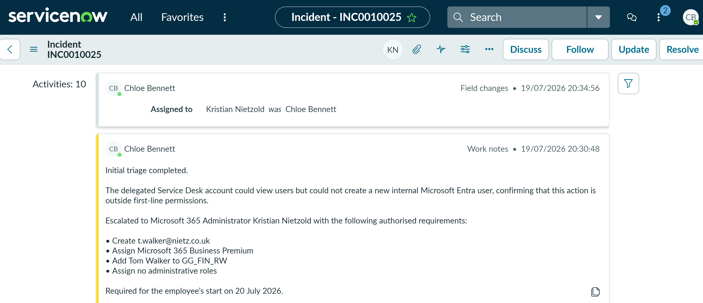
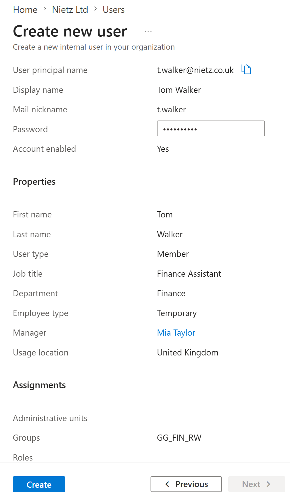
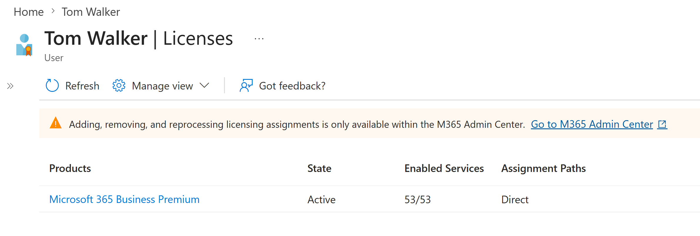
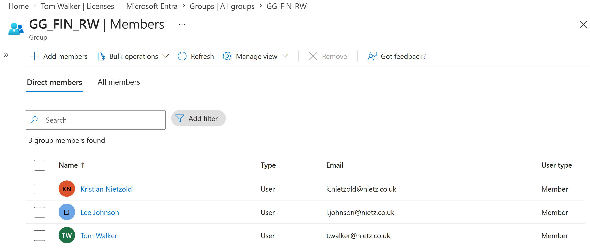
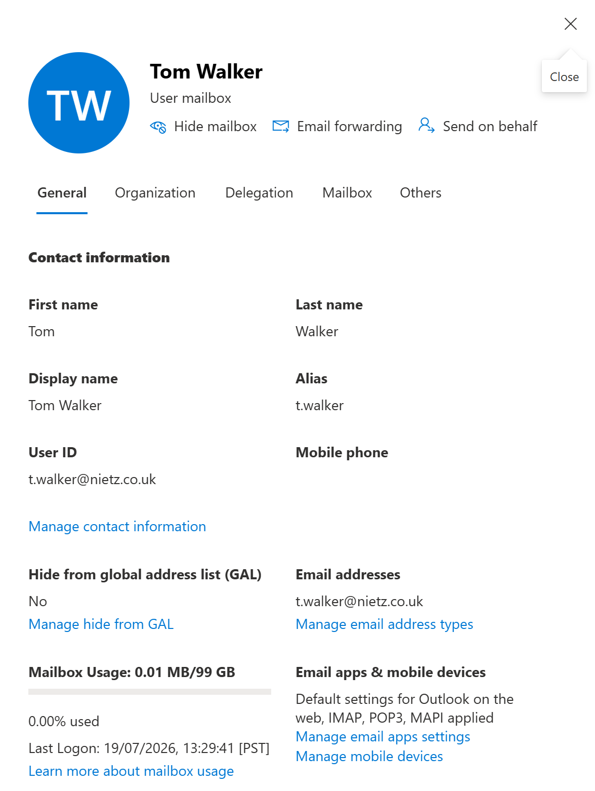
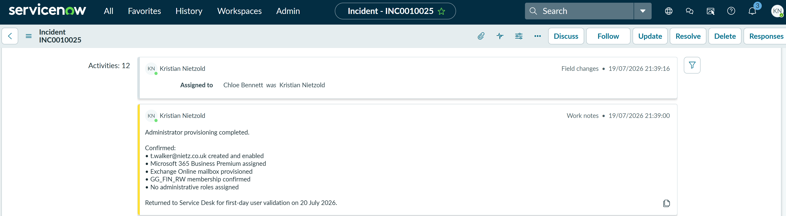
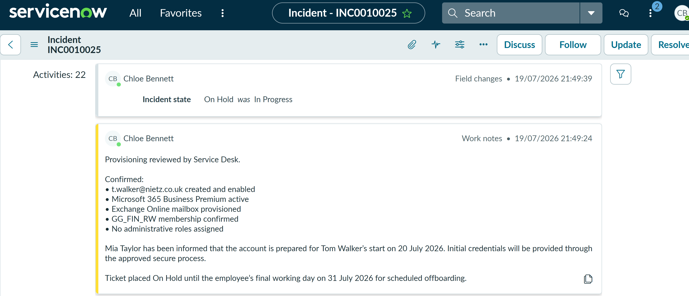

TS-019: Temporary Finance Assistant onboarding and offboarding
Coordinated the onboarding phase of a time-limited Microsoft 365 request through Service Desk triage, least-privilege escalation and administrator-led provisioning, then placed the ticket on hold for controlled offboarding after the placement.
Scenario
Mia Taylor requested temporary Microsoft 365 access for Tom Walker, who was due to provide Finance Assistant holiday cover from 20 July 2026 to 31 July 2026. Tom required a member account, a Microsoft 365 Business Premium licence, an Exchange Online mailbox and Finance read/write access through GG_FIN_RW. No administrative roles were required.
ServiceNow Ticket
The request was received by email and assigned to Chloe Bennett in the Service Desk. It was classified as Request / Admin > Onboarding and linked to the Identity & Access Management service, User Provisioning service offering and Microsoft Entra ID configuration item. The description recorded the authorised access and instructed the Service Desk to place the ticket on hold after onboarding so the same record could track scheduled offboarding.

Investigation and Escalation
I first tested the request through Chloe Bennett's delegated Service Desk account. Chloe could view users in Microsoft Entra ID, but the Create new user option was unavailable. This demonstrated that internal user creation remained outside the first-line permission boundary.

Chloe documented the permission limitation, recorded the authorised account, licence and Finance-access requirements, and reassigned INC0010025 to Kristian Nietzold for administrator completion.

Provisioning
Using the administrator account, I prepared Tom Walker as an enabled internal member with the sign-in name t.walker@nietz.co.uk. The profile recorded his Finance Assistant job title, Finance department, temporary employee type, Mia Taylor as manager and United Kingdom usage location. Membership of GG_FIN_RW was selected while the roles field remained empty.

After the user was created, I assigned Microsoft 365 Business Premium. The licence was shown as active, directly assigned and providing all 53 enabled services.

I then verified the post-creation group state. Tom appeared as a direct member of GG_FIN_RW, confirming that the approved Finance read/write access had been applied through group-based access control.

The Exchange admin centre showed that licensing had provisioned a user mailbox for t.walker@nietz.co.uk. The mailbox was visible in the address list and had Outlook on the web and the standard Exchange client protocols available.

Service Desk Validation
I recorded the completed administrator actions in ServiceNow and returned the ticket to Chloe Bennett. The hand-back confirmed the enabled account, Business Premium licence, Exchange Online mailbox, Finance group membership and absence of administrative roles.

Chloe reviewed the administrator evidence, confirmed that the account was ready for Tom's start date and recorded that Mia Taylor had been informed. Because Tom had not yet started work, no advance user sign-in was required. The incident was changed from In Progress to On Hold until the final working day on 31 July 2026.

Current Status
Summary
- I logged and classified a time-limited onboarding request with clear start and end dates.
- I demonstrated the Service Desk permission boundary using Chloe Bennett's delegated account.
- I documented the escalation and reassigned the privileged work to the Microsoft 365 administrator.
- I created
t.walker@nietz.co.ukas an enabled member with the correct temporary Finance profile. - I assigned Microsoft 365 Business Premium and verified the active service entitlement.
- I confirmed direct membership of
GG_FIN_RWand successful Exchange Online mailbox provisioning. - I returned the ticket to Chloe for Service Desk review and requester communication.
- I placed the incident on hold so the same record can track controlled offboarding on 31 July 2026.